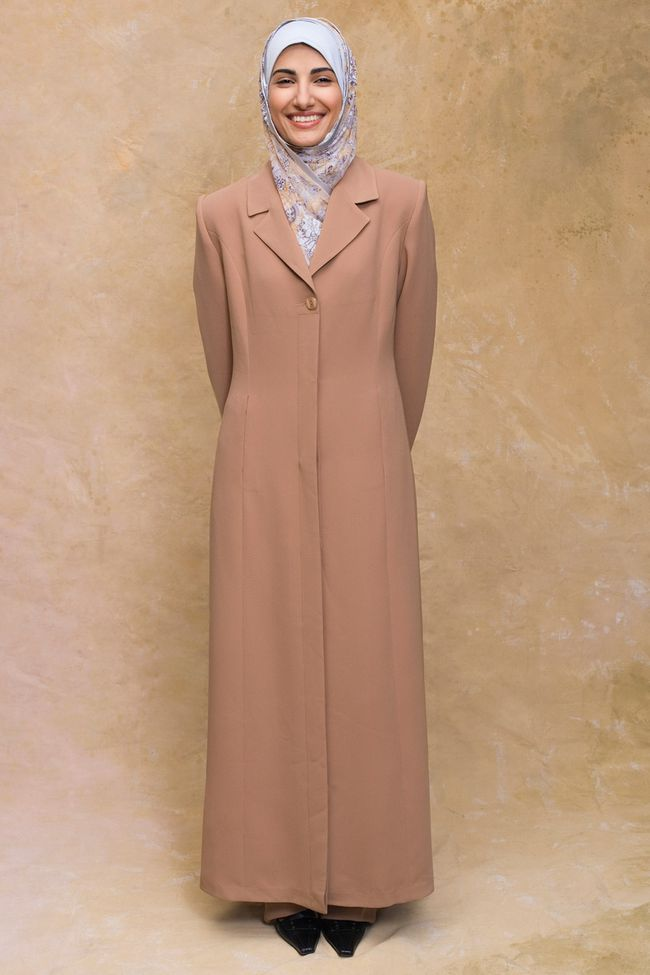
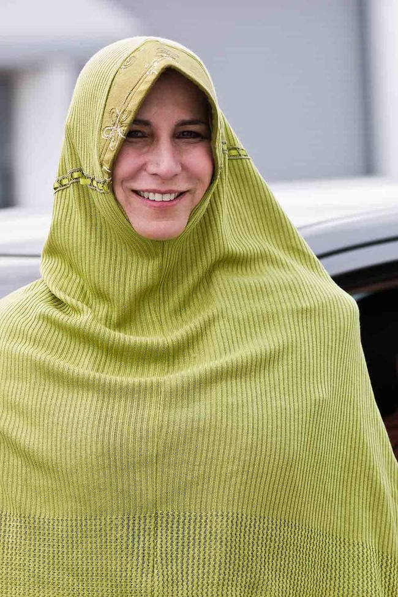
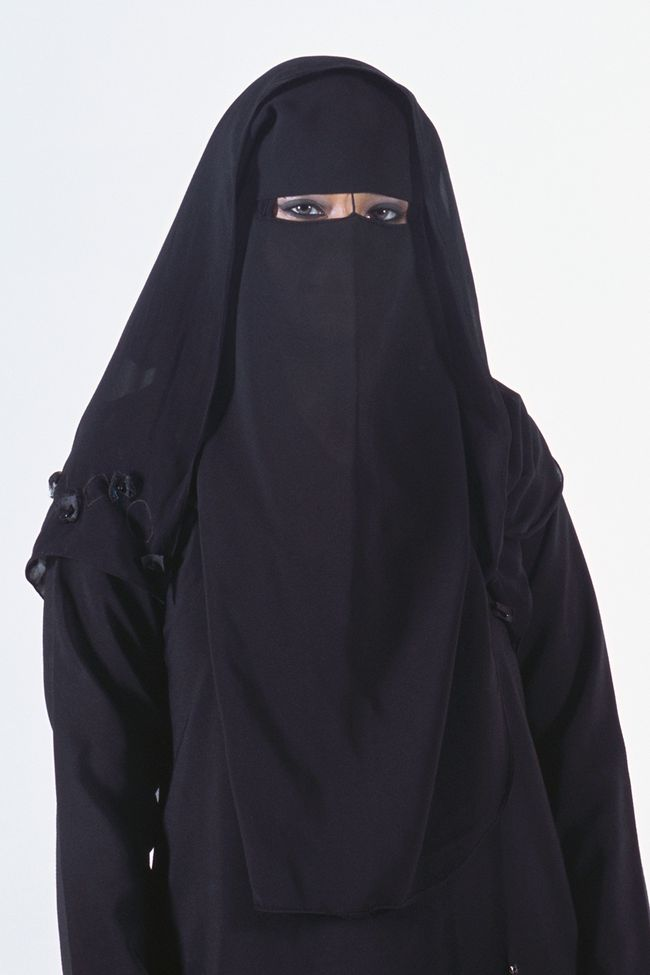
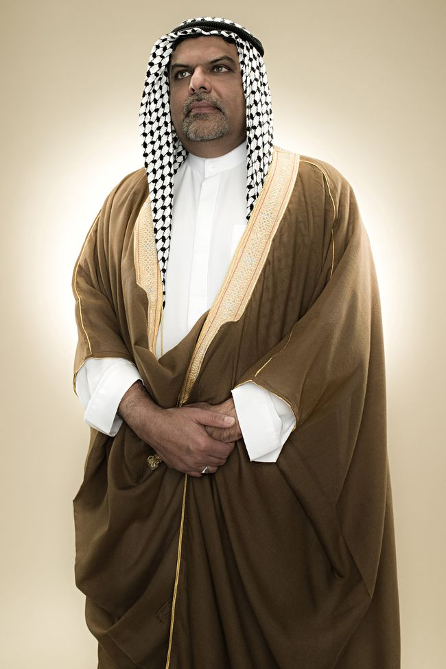
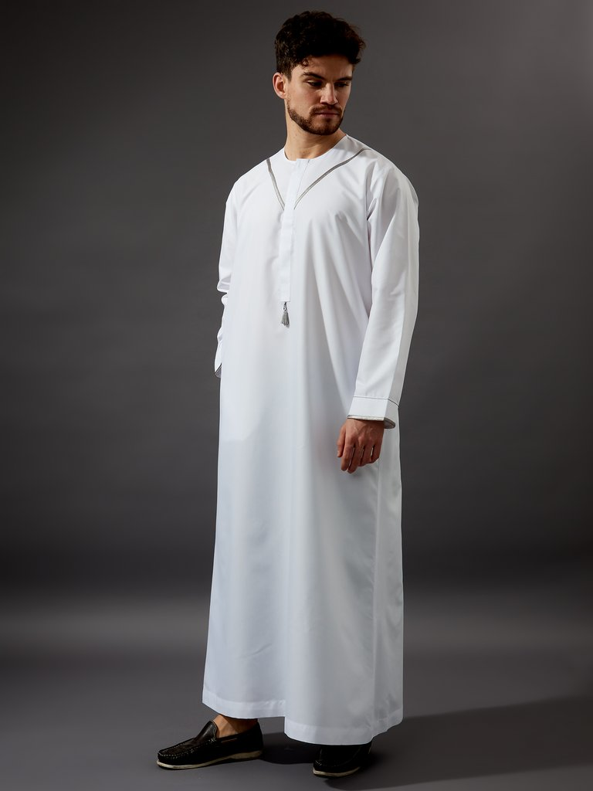
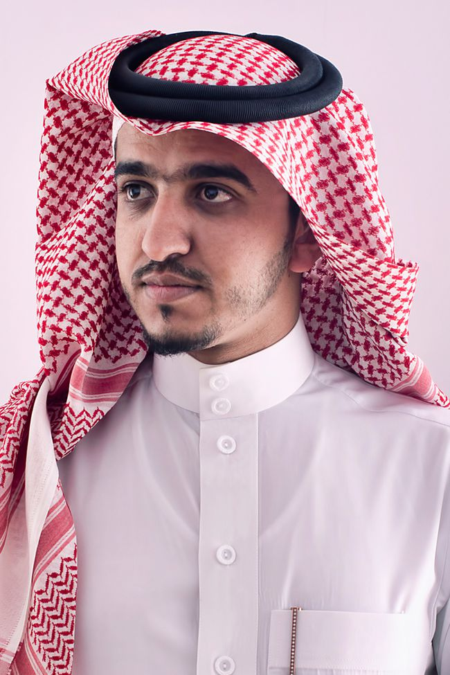

The jilbab (jill-bab) is a general term that comes from the surah (chapter) Al-Aĥzāb (33:59) in the Islamic holy book, the Qur’an. It refers to an over-garment, cape, or cloak worn by Muslim women in public. Like a long-tailored coat, a woman’s jilbab can vary in color and fabric.

The khimaar (key-mar) is a general term for a woman's head and/or face veil. Khimaar can also refer to a scarf that covers the entire top half of the body, down to the waist.

The niqab (nik-ob) is a face veil is an optional garment worn by some Muslim women. Some women choose to cover both eyes, while other show both eyes or one eye.

The bisht (bish-t) is a dressier men's robe that is sometimes worn over the thobe. A bisht is often worn by high-level government or religious leaders.

The thobe (thow-b) is a long robe worn by Muslim men. Thobe’s are ankle length and loose, and the top is often tailored like a shirt. They are typically white, but can vary in color.

The ghutra (guh-tra) is a square or rectangular headscarf worn by men, along with a fabric rope band (typically black) to keep it in place. The ghutra is usually white, red and white checkered, or black and white checkered. In some countries, it is known as a shemagh or kuffiyeh.